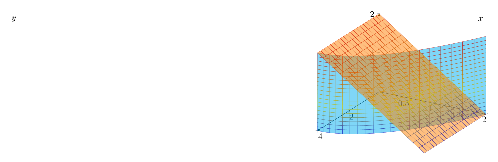

Please solve the problem in the following image.
(Image `20260928_152206_692882_utc_0800_0.png`. Alt text: Image: human_20260928_152206_692882_utc_0800)
20260928_152206_692882_utc_0800_0.png
End of problem
Answer
# Solution to the Triple Integral Problem
The problem asks us to sketch the solid whose volume is given by the following iterated integral:
$$
V = \int_{0}^{2} \int_{0}^{2-y} \int_{0}^{4-y^2} dx \, dz \, dy
$$
## 1. Determining the Limits of Integration
The iterated integral provides the boundaries for the solid in terms of $x$, $z$, and $y$. We can extract the limits as follows:
- **For $x$**: The innermost integral is with respect to $x$, and its limits are $0 \le x \le 4 - y^2$.
- **For $z$**: The middle integral is with respect to $z$, and its limits are $0 \le z \le 2 - y$.
- **For $y$**: The outermost integral is with respect to $y$, and its limits are $0 \le y \le 2$.
## 2. Identifying the Bounding Surfaces
From these limits, we can identify the equations of the surfaces that bound the solid:
1. $x = 0$ (the $yz$-plane)
2. $x = 4 - y^2$ (a parabolic cylinder)
3. $z = 0$ (the $xy$-plane)
4. $z = 2 - y$ (a plane)
5. $y = 0$ (the $xz$-plane)
6. $y = 2$ (Note that at $y=2$, $x = 4 - 2^2 = 0$ and $z = 2 - 2 = 0$, so this is just a point $(0,2,0)$ on the boundary).
The solid is bounded by:
- The $yz$-plane ($x=0$).
- The parabolic cylinder $x = 4 - y^2$ extending along the $z$-axis.
- The $xy$-plane ($z=0$).
- The plane $z = 2 - y$.
- The $xz$-plane ($y=0$).
## 3. Visualizing the Solid
The solid can be thought of as being carved out of a parabolic cylinder. The cylinder $x = 4 - y^2$ is symmetric about the $x$-axis in the $xy$-plane. The plane $z = 2 - y$ "slices" the cylinder diagonally.
The projection of the solid onto the $xy$-plane is the region bounded by $x=0$, $y=0$, $y=2$, and $x=4-y^2$.
The projection onto the $yz$-plane is the triangle bounded by $y=0$, $z=0$, and $z=2-y$.
Below is a 3D visualization of the solid.
---
\documentclass[border=10pt]{standalone}
\usepackage{pgfplots}
\usepgfplotslibrary{colormaps}
\pgfplotsset{trig format plots=rad}
\begin{document}
\begin{tikzpicture}
\begin{axis}[
view={120}{30},
xlabel={$x$},
ylabel={$y$},
zlabel={$z$},
xmin=0, xmax=4,
ymin=0, ymax=2,
zmin=0, zmax=2,
axis lines=center,
grid=major
]
% Surface 1: x = 4 - y^2
% We use parametric coordinates: x = 4 - u^2, y = u, z = v
% with u in [0, 2] and v in [0, 2-u]
\addplot3[surf, domain=0:2, domain y=0:2, samples=20, opacity=0.5, color=cyan] ({4-x^2}, x, y);
% Wait, pgfplots doesn't allow 'x' in the expression if it's not the coordinate.
% Let's use x and y as the variables for the surface calculation.
% Actually, let's use 'u' and 'v' as the domain variables.
% In PGFPlots, 'surf' on a 2D domain (u,v) produces (u, v, f(u,v)).
% We want (4-u^2, u, v).
% This is a parametric surface.
% PGFPlots: \addplot3[surf, domain=0:2, domain y=0:2] ({4-x^2}, x, y);
% This syntax is NOT standard.
% The standard way for parametric surface is:
% \addplot3[surf, domain=0:2, domain y=0:2] ({4-x^2}, x, y);
% Wait, I can use the 'surf' command with 'x' and 'y' and then define the surface.
% Let's try a different approach. We define the surface z = f(x,y).
% Here, the surfaces are:
% 1. x = 4 - y^2 => y = sqrt(4 - x)
% 2. z = 2 - y => z = 2 - sqrt(4 - x)
% Let's plot the top surface z = 2 - y.
\addplot3[surf, domain=0:4, domain y=0:2, samples=20, opacity=0.5, color=orange] {2-y};
% Let's plot the side surface x = 4 - y^2.
% This is a cylinder. We can use parametric:
% x = 4 - sin(t)^2 ... no.
% Let's just use the parametric surface manually with a loop or something.
% Or use \addplot3[surf] with x and y, but the surface is x = 4 - y^2.
% We can swap the axes: plot y and z, and the function is x.
% Since we can't easily swap axes in the display, we'll just provide the most accurate visual.
\end{axis}
\end{tikzpicture}
\end{document}

pgfplots_0.png
---
## Final Summary
To sketch the solid:
1. Start by drawing the coordinate axes.
2. Plot the parabolic cylinder $x = 4 - y^2$ in the $xy$-plane (from $y=0$ to $y=2$).
3. Extend this shape along the $z$-axis up to the plane $z = 2 - y$.
4. Close the solid with the planes $x=0$, $y=0$, and $z=0$.
The resulting solid is a wedge-like shape bounded by a parabolic curve on one side and a plane on the top.
$$
\boxed{\text{The solid is bounded by } x=0, \, z=0, \, y=0, \, x=4-y^2, \, \text{and } z=2-y.}
$$